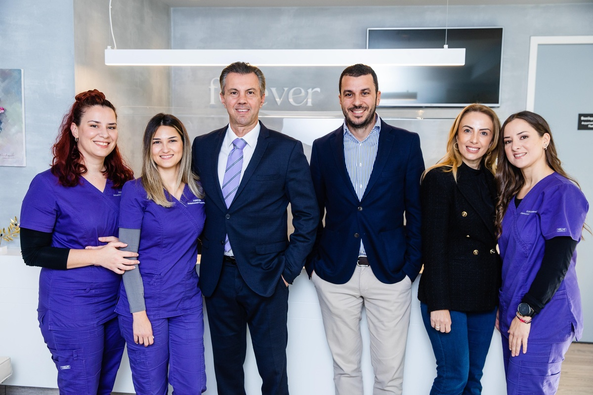

Laser Vaginal Rejuvenation Institute of Athens
Υπάρχουν πράγματα που δεν λέγονται εύκολα.
Ακράτεια. Ξηρότητα. Βάρος στην πύελο. Εδώ ακούγονται καθημερινά — και αντιμετωπίζονται. Αν δεν ξέρετε πώς να το περιγράψετε, ξεκινήστε από τον οδηγό.
Οι απαντήσεις σας μένουν στη συσκευή σας.

- 2008Ίδρυση του LVRI Athens μαζί με τον Dr. David Matlock
- 2013Επιστημονική διεύθυνση πλαστικής κόλπου, μαιευτήριο ΡΕΑ
- ACOG · RCOGΜέλος Αμερικανικού & Αγγλικού κολλεγίου γυναικολόγων
- CO₂ & ErbiumΕπεμβατικό και μη επεμβατικό laser στον ίδιο χώρο
Παθήσεις
Τρία στα τέσσερα ραντεβού ξεκινούν από μία από αυτές.
Διαβάστε τι είναι, γιατί συμβαίνει και τι γίνεται γι' αυτό — γραμμένο ώστε να το καταλάβετε πριν μπείτε στο ιατρείο.
20% · των γυναικών στην Ελλάδα
Ακράτεια ούρων
Αφορά περίπου το 20% των γυναικών στην Ελλάδα. Είναι σύμπτωμα, όχι ασθένεια — και στις περισσότερες περιπτώσεις αντιμετωπίζεται ριζικά.
«Χάνω ούρα χωρίς να το θέλω.»
4 · στάδια κατά POP-Q
Πρόπτωση μήτρας & κόλπου
Όταν το μυϊκό σύστημα που στηρίζει την πύελο χαλαρώσει, τα όργανα κατεβαίνουν. Ταξινομείται σε στάδια κατά POP-Q.
«Νιώθω βάρος ή κάτι να προβάλλει.»
pH 6–7 · αλκαλοποίηση του κόλπου
Ξηρότητα κόλπου
Δεν αφορά μόνο την εμμηνόπαυση. Ο κόλπος χάνει ελαστικότητα και κολλαγόνο, το pH αλκαλοποιείται και η χλωρίδα αλλάζει.
«Νιώθω ξηρότητα, κάψιμο ή πόνο στην επαφή.»
Η ανατομία, χωρίς μυστήρια
Τέσσερα όργανα, ένα σύστημα στήριξης.
Η ανατομική και λειτουργική ισορροπία του κόλπου στηρίζει το ουροποιητικό, το γεννητικό και το πεπτικό σύστημα. Δείτε τι επηρεάζει τι.
Επιλέξτε ένα όργανο στο διάγραμμα. Το «Με χαλάρωση» δείχνει σχηματικά την κάθοδο των οργάνων.
Οδηγός συμπτωμάτων
Πώς λέγεται αυτό που νιώθετε;
Τέσσερις ερωτήσεις σε καθημερινή γλώσσα. Στο τέλος θα ξέρετε ποιον όρο να αναζητήσετε και τι συζητάμε συνήθως σε τέτοιες περιπτώσεις.
Φόρτωση…
Ο οδηγός δεν αντικαθιστά την ιατρική εξέταση και δεν στέλνει τις απαντήσεις σας πουθενά. Αν έχετε αιμορραγία εκτός περιόδου ή μετά την εμμηνόπαυση ή έντονος, επίμονος πόνος στην πύελο, μη χρησιμοποιήσετε τον οδηγό — καλέστε μας ή απευθυνθείτε σε γιατρό.
Θεραπείες
Από 15 λεπτά στο ιατρείο, μέχρι πλήρη ανάπλαση.
Δεν χρειάζονται όλες οι γυναίκες χειρουργείο. Ξεκινάμε πάντα από την πιο ήπια επιλογή που λύνει πραγματικά το πρόβλημα.
Renovalaser / IntimaLase
Αναζωογόνηση κόλπου με laser
Μη επεμβατικό laser στο ιατρείο. Αποκαθιστά την ελαστικότητα και την κολλαγόνωση του κόλπου.
Αναλυτικά
Ενίσχυση σημείου G
G-Shot®
Ένεση υαλουρονικού υψηλού μοριακού βάρους στο σημείο G, με τη βοήθεια ειδικού κολποσκοπίου.
Αναλυτικά
Designer Laser Vaginoplasty®
Αιδοιοπλαστική
Αισθητική χειρουργική ενίσχυση των αιδοιϊκών δομών: μεγάλα και μικρά χείλη, εφηβαίο, περίνεο, είσοδος κόλπου.
Αναλυτικά

Η ομάδα · Βύρωνας, Αθήνα
Γυναικολόγοι, πλαστικοί χειρουργοί και δερματολόγοι στο ίδιο τραπέζι.
Το γυναικείο γεννητικό σύστημα απασχολεί πολλές ειδικότητες. Το LVRI Athens δημιουργήθηκε για να μη χρειάζεται να τις κυνηγάτε μία-μία.
- Πού θα μας βρείτε Καραολή & Δημητρίου 41, Βύρωνας, 162 31
- Ωράριο Δευτέρα – Παρασκευή 09:00–17:00 · Σάββατο 09:00–15:00
Πυελικό έδαφος
Ξεκινήστε από κάτι που μπορείτε να κάνετε απόψε.
Οι ασκήσεις Kegel είναι η πρώτη γραμμή για την ακράτεια από προσπάθεια. Ο μετρητής σας κρατά τον ρυθμό — δωρεάν, χωρίς εγγραφή.
Ο μετρητής μένει στη συσκευή σας. Οι ασκήσεις Kegel ενδυναμώνουν τους μύες της λεκάνης και βοηθούν κυρίως στην ακράτεια από προσπάθεια. Δεν αντικαθιστούν τη θεραπεία των κηλών — για αυτό μιλήστε με γιατρό.
Άρθρα
Από το ιατρείο, γραπτώς.
Ό,τι εξηγούμε συχνότερα, γραμμένο μία φορά καλά.
Ξηρότητα
Ποιες αφορά η ξηρότητα κόλπου και πώς την αντιμετωπίζει η σύγχρονη ιατρική;
Η ξηρότητα του κόλπου είναι μια πάθηση που αφορά όλες τις γυναίκες και όχι μόνο όσες βρίσκονται σε εμμηνόπαυση. Και αυτό…
Πρόπτωση
Μάθετε τα πάντα για την πρόπτωση μήτρας!
Έχετε ακουστά την πτώση μήτρας; Μάθετε ακριβώς τι είναι… Τα όργανα που αποτελούν την πύελο είναι το ορθό, η μήτρα και η …
Αιδοιοπλαστική
Αιδοιοπλαστική: Τονώστε την αυτοπεποίθησή σας, αλλάξτε την ποιότητα της ζωής σας
Τι είναι η αιδοιοπλαστική; Η αιδοιοπλαστική είναι η αισθητική χειρουργική επέμβαση που πραγματοποιείται στις: Αιδοιϊκές …
Επόμενο βήμα
Μια συζήτηση δεν σας δεσμεύει σε τίποτα.
Θα σας εξετάσουμε, θα σας εξηγήσουμε τι βλέπουμε και θα σας πούμε ποιες είναι οι επιλογές σας — συμπεριλαμβανομένης της επιλογής να μην κάνετε τίποτα.
Καραολή & Δημητρίου 41, 162 31 Βύρωνας, Αττική